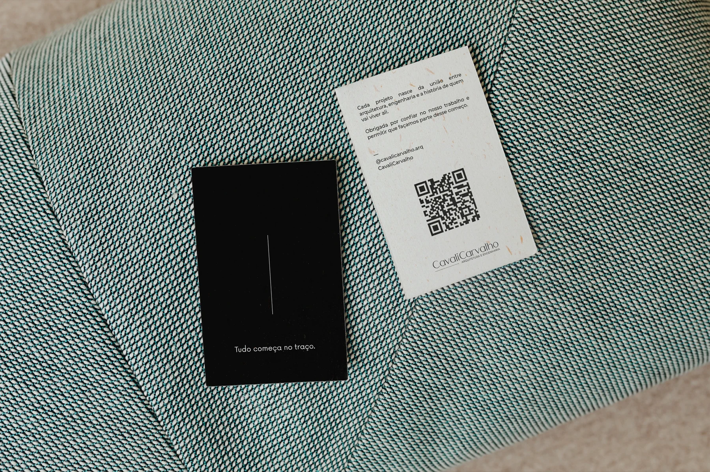
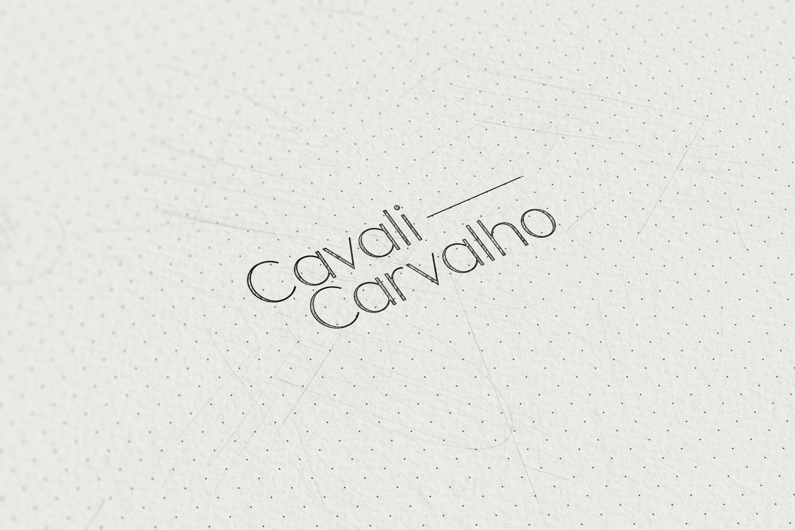
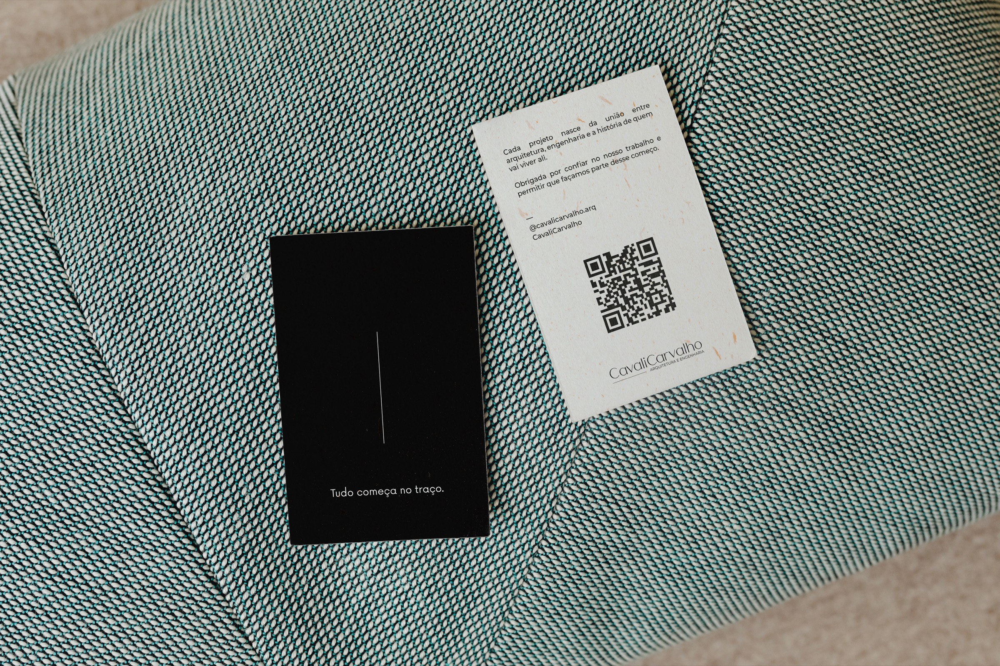
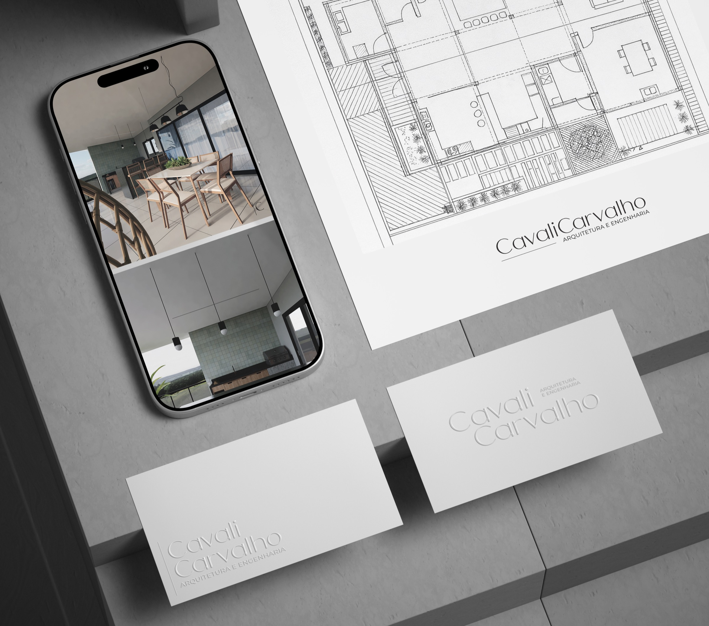
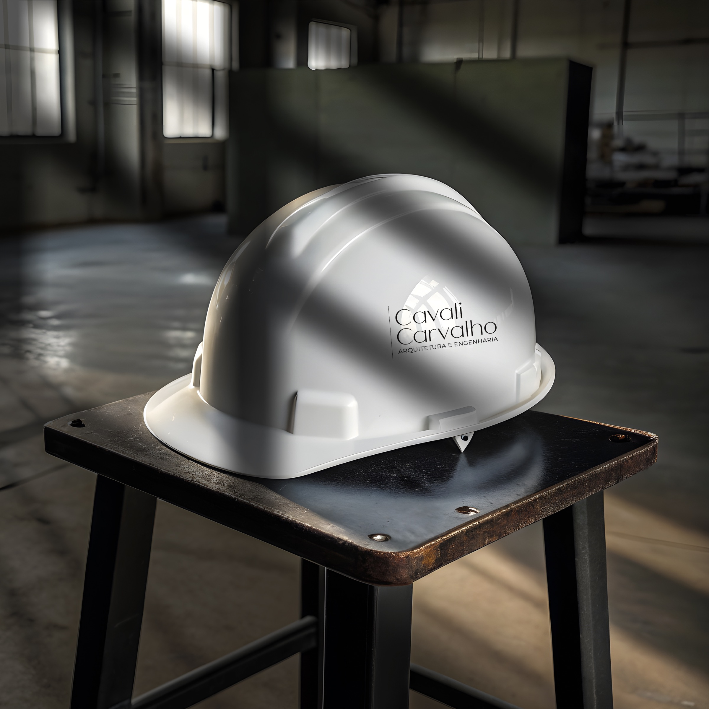
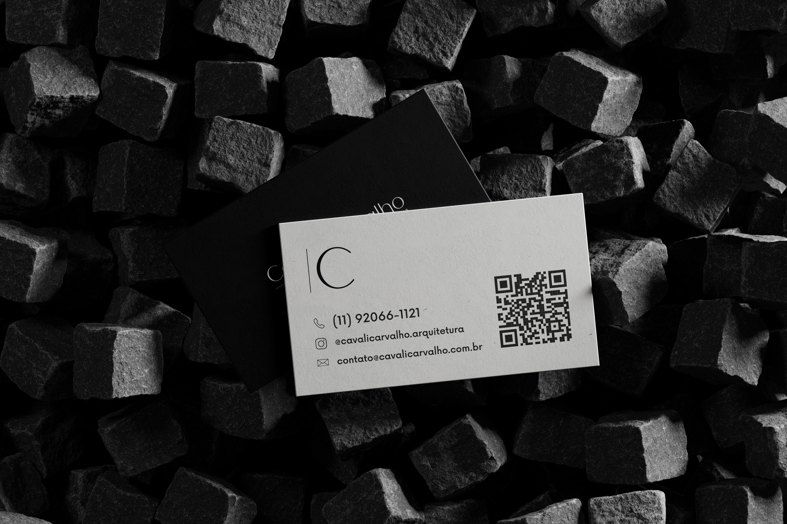
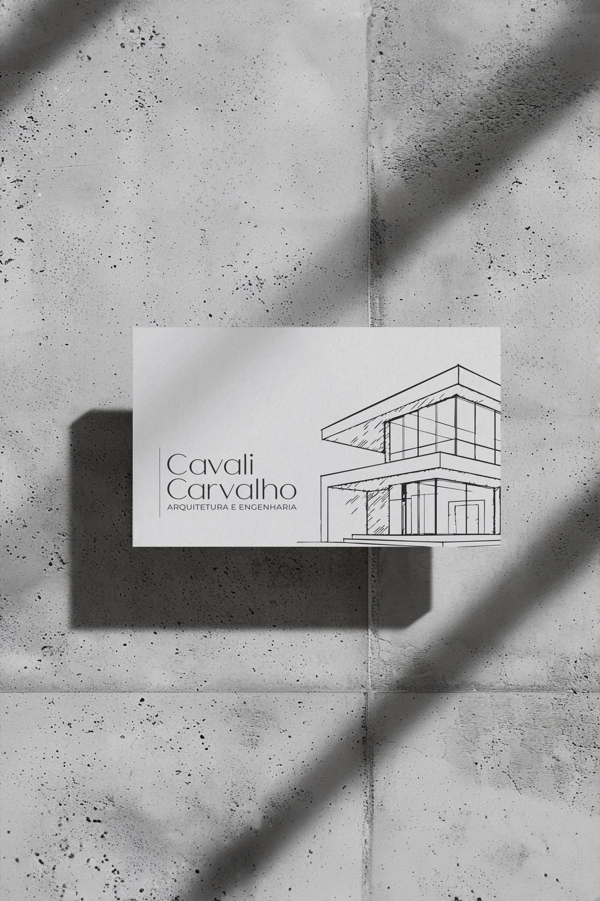

CavaliCarvalho
Branding, identidade visual e website para integrar arquitetura e engenharia com clareza, precisão e confiança.
Beleza e funcionalidade não precisam existir em lados opostos. A CavaliCarvalho traduz arquitetura e engenharia como uma experiência única, conduzida por estética, método e precisão.

A CavaliCarvalho nasceu da união entre arquitetura e engenharia, combinando sensibilidade estética e precisão técnica em uma única experiência.
Mais do que desenvolver projetos, a marca foi estruturada para conduzir clientes em toda a jornada da obra, do conceito inicial à entrega final, com clareza, segurança e confiança.
Seu posicionamento traduz um mercado que frequentemente separa criatividade e execução, demonstrando que beleza e funcionalidade não precisam existir em lados opostos.

O principal desafio era construir uma marca capaz de comunicar a integração entre arquitetura e engenharia de forma sofisticada, clara e diferenciada.
Em um segmento marcado por processos fragmentados, retrabalhos e insegurança durante a execução, a CavaliCarvalho precisava transmitir autoridade técnica sem parecer excessivamente corporativa, além de demonstrar sua capacidade de transformar projetos em resultados concretos.
Também era fundamental desenvolver uma presença digital que refletisse essa mesma percepção de organização, método e excelência em todos os pontos de contato da marca.

A Revee estruturou toda a estratégia de marca da CavaliCarvalho, criando um posicionamento baseado em três pilares centrais: integração, precisão e confiança.
A identidade visual foi desenvolvida para representar o equilíbrio entre técnica e estética, utilizando formas minimalistas, tipografia elegante e elementos gráficos inspirados nos traços arquitetônicos que dão origem a cada projeto.
Além do branding, desenvolvemos o website institucional da marca, transformando sua presença digital em uma extensão da experiência oferecida aos clientes: organizada, intuitiva e alinhada ao posicionamento premium do escritório.


O resultado foi uma marca sólida, contemporânea e preparada para transmitir credibilidade desde o primeiro contato.
A nova presença fortalece a percepção de valor da CavaliCarvalho e diferencia o escritório em um mercado altamente competitivo, conectando clareza estratégica, identidade visual e experiência digital.
